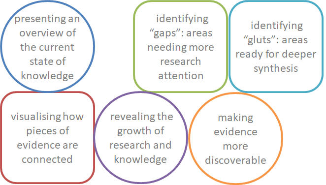
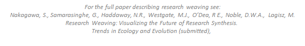

It’s a research synthesis approach combining:
evidence (from systematic mapping of publication contents)
and influence (from bibliometric data).
It is flexible (not prescriptive) and it intends
to combine, summarize and visualize information content,
history, and networks among a collection
of diverse publication types on any given topic.

